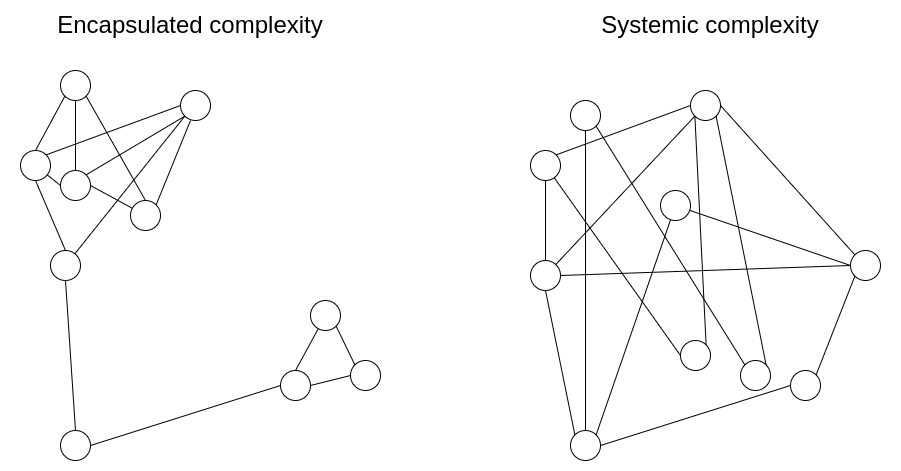
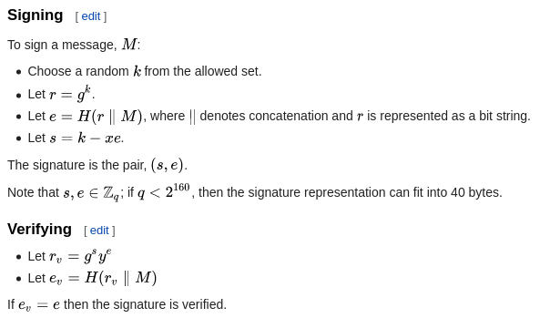
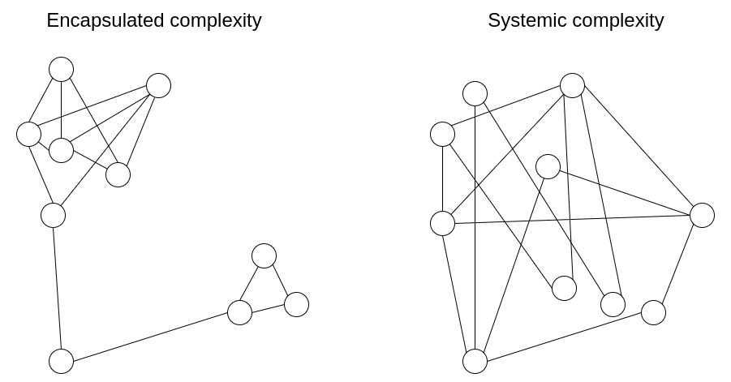
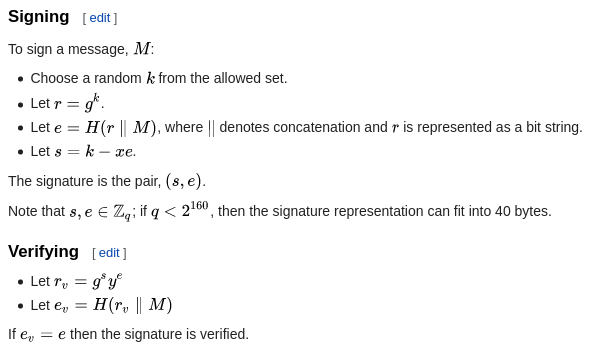

Encapsulated vs systemic complexity in protocol design
2020 Feb 28
See all posts
Encapsulated vs systemic complexity in protocol design
One of the main goals of Ethereum protocol design is to minimize complexity: make the protocol as simple as possible, while still making a blockchain that can do what an effective blockchain needs to do. The Ethereum protocol is far from perfect at this, especially since much of it was designed in 2014-16 when we understood much less, but we nevertheless make an active effort to reduce complexity whenever possible.
One of the challenges of this goal, however, is that complexity is difficult to define, and sometimes, you have to trade off between two choices that introduce different kinds of complexity and have different costs. How do we compare?
One powerful intellectual tool that allows for more nuanced thinking about complexity is to draw a distinction between what we will call encapsulated complexity and systemic complexity.

Encapsulated complexity occurs when there is a system with sub-systems that are internally complex, but that present a simple "interface" to the outside. Systemic complexity occurs when the different parts of a system can't even be cleanly separated, and have complex interactions with each other.
Here are a few examples.
BLS signatures vs Schnorr signatures
BLS signatures and Schnorr signatures are two popular types of cryptographic signature schemes that can be made with elliptic curves.
BLS signatures appear mathematically very simple:
Signing: \(\sigma = H(m) * k\) Verifying: \(e([1], \sigma) \stackrel{?}{=} e(H(m), K)\)
\(H\) is a hash function, \(m\) is the message, and \(k\) and \(K\) are the private and public keys. So far, so simple. However, the true complexity is hidden inside the definition of the \(e\) function: elliptic curve pairings, one of the most devilishly hard-to-understand pieces of math in all of cryptography.
Now, consider Schnorr signatures. Schnorr signatures rely only on basic elliptic curves. But the signing and verification logic is somewhat more complex:

So... which type of signature is "simpler"? It depends what you care about! BLS signatures have a huge amount of technical complexity, but the complexity is all buried within the definition of the \(e\) function. If you treat the \(e\) function as a black box, tBLS signatures are actually really easy. Schnorr signatures, on the other hand, have less total complexity, but they have more pieces that could interact with the outside world in tricky ways.
For example:
- Doing a BLS multi-signature (a combined signature from two keys \(k_1\) and \(k_2\)) is easy: just take \(\sigma_1 + \sigma_2\). But a Schnorr multi-signature requires two rounds of interaction, and there are tricky key cancellation attacks that need to be dealt with.
- Schnorr signatures require random number generation, BLS signatures do not.
Elliptic curve pairings in general are a powerful "complexity sponge" in that they contain large amounts of encapsulated complexity, but enable solutions with much less systemic complexity. This is also true in the area of polynomial commitments: compare the simplicity of KZG commitments (which require pairings) and the much more complicated internal logic of inner product arguments (which do not).
Cryptography vs cryptoeconomics
One important design choice that appears in many blockchain designs is that of cryptography versus cryptoeconomics. Often (eg. in rollups) this comes in the form of a choice between fraud proofs and validity proofs (aka. ZK-SNARKs).
ZK-SNARKs are complex technology. While the basic ideas behind how they work can be explained in a single post, actually implementing a ZK-SNARK to verify some computation involves many times more complexity than the computation itself (hence why ZK-SNARKs for the EVM are still under development while fraud proofs for the EVM are already in the testing stage). Implementing a ZK-SNARK effectively involves circuit design with special-purpose optimization, working with unfamiliar programming languages, and many other challenges. Fraud proofs, on the other hand, are inherently simple: if someone makes a challenge, you just directly run the computation on-chain. For efficiency, a binary-search scheme is sometimes added, but even that doesn't add too much complexity.
But while ZK-SNARKs are complex, their complexity is encapsulated complexity. The relatively light complexity of fraud proofs, on the other hand, is systemic. Here are some examples of systemic complexity that fraud proofs introduce:
- They require careful incentive engineering to avoid the verifier's dilemma.
- If done in-consensus, they require extra transaction types for the fraud proofs, along with reasoning about what happens if many actors compete to submit a fraud proof at the same time.
- They depend on a synchronous network.
- They allow censorship attacks to be also used to commit theft.
- Rollups based on fraud proofs require liquidity providers to support instant withdrawals.
For these reasons, even from a complexity perspective purely cryptographic solutions based on ZK-SNARKs are likely to be long-run safer: ZK-SNARKs have are more complicated parts that some people have to think about, but they have fewer dangling caveats that everyone has to think about.
Miscellaneous examples
- Proof of work (Nakamoto consensus) - low encapsulated complexity, as the mechanism is extremely simple and easy to understand, but higher systemic complexity (eg. selfish mining attacks).
- Hash functions - high encapsulated complexity, but very easy-to-understand properties so low systemic complexity.
- Random shuffling algorithms - shuffling algorithms can either be internally complicated (as in Whisk) but lead to easy-to-understand guarantees of strong randomness, or internally simpler but lead to randomness properties that are weaker and more difficult to analyze (systemic complexity).
- Miner extractable value (MEV) - a protocol that is powerful enough to support complex transactions can be fairly simple internally, but those complex transactions can have complex systemic effects on the protocol's incentives by contributing to the incentive to propose blocks in very irregular ways.
- Verkle trees - Verkle trees do have some encapsulated complexity, in fact quite a bit more than plain Merkle hash trees. Systemically, however, Verkle trees present the exact same relatively clean-and-simple interface of a key-value map. The main systemic complexity "leak" is the possibility of an attacker manipulating the tree to make a particular value have a very long branch; but this risk is the same for both Verkle trees and Merkle trees.
How do we make the tradeoff?
Often, the choice with less encapsulated complexity is also the choice with less systemic complexity, and so there is one choice that is obviously simpler. But at other times, you have to make a hard choice between one type of complexity and the ther. What should be clear at this point is that complexity is less dangerous if it is encapsulated. The risks from complexity of a system are not a simple function of how long the specification is; a small 10-line piece of the specification that interacts with every other piece adds more complexity than a 100-line function that is otherwise treated as a black box.
However, there are limits to this approach of preferring encapsulated complexity. Software bugs can occur in any piece of code, and as it gets bigger the probability of a bug approaches 1. Sometimes, when you need to interact with a sub-system in an unexpected and new way, complexity that was originally encapsulated can become systemic.
One example of the latter is Ethereum's current two-level state tree, which features a tree of account objects, where each account object in turn has its own storage tree.

This tree structure is complex, but at the beginning the complexity seemed to be well-encapsulated: the rest of the protocol interacts with the tree as a key/value store that you can read and write to, so we don't have to worry about how the tree is structured.
Later, however, the complexity turned out to have systemic effects: the ability of accounts to have arbitrarily large storage trees meant that there was no way to reliably expect a particular slice of the state (eg. "all accounts starting with 0x1234") to have a predictable size. This makes it harder to split up the state into pieces, complicating the design of syncing protocols and attempts to distribute the storage process. Why did encapsulated complexity become systemic? Because the interface changed. The fix? The current proposal to move to Verkle trees also includes a move to a well-balanced single-layer design for the tree,
Ultimately, which type of complexity to favor in any given situation is a question with no easy answers. The best that we can do is to have an attitude of moderately favoring encapsulated complexity, but not too much, and exercise our judgement in each specific case. Sometimes, a sacrifice of a little bit of systemic complexity to allow a great reduction of encapsulated complexity really is the best thing to do. And other times, you cam even misjudge what is encapsulated and what isn't. Each situation is different.
Encapsulated vs systemic complexity in protocol design
2020 Feb 28 See all postsOne of the main goals of Ethereum protocol design is to minimize complexity: make the protocol as simple as possible, while still making a blockchain that can do what an effective blockchain needs to do. The Ethereum protocol is far from perfect at this, especially since much of it was designed in 2014-16 when we understood much less, but we nevertheless make an active effort to reduce complexity whenever possible.
One of the challenges of this goal, however, is that complexity is difficult to define, and sometimes, you have to trade off between two choices that introduce different kinds of complexity and have different costs. How do we compare?
One powerful intellectual tool that allows for more nuanced thinking about complexity is to draw a distinction between what we will call encapsulated complexity and systemic complexity.

Encapsulated complexity occurs when there is a system with sub-systems that are internally complex, but that present a simple "interface" to the outside. Systemic complexity occurs when the different parts of a system can't even be cleanly separated, and have complex interactions with each other.
Here are a few examples.
BLS signatures vs Schnorr signatures
BLS signatures and Schnorr signatures are two popular types of cryptographic signature schemes that can be made with elliptic curves.
BLS signatures appear mathematically very simple:
Signing: \(\sigma = H(m) * k\) Verifying: \(e([1], \sigma) \stackrel{?}{=} e(H(m), K)\)
\(H\) is a hash function, \(m\) is the message, and \(k\) and \(K\) are the private and public keys. So far, so simple. However, the true complexity is hidden inside the definition of the \(e\) function: elliptic curve pairings, one of the most devilishly hard-to-understand pieces of math in all of cryptography.
Now, consider Schnorr signatures. Schnorr signatures rely only on basic elliptic curves. But the signing and verification logic is somewhat more complex:

So... which type of signature is "simpler"? It depends what you care about! BLS signatures have a huge amount of technical complexity, but the complexity is all buried within the definition of the \(e\) function. If you treat the \(e\) function as a black box, tBLS signatures are actually really easy. Schnorr signatures, on the other hand, have less total complexity, but they have more pieces that could interact with the outside world in tricky ways.
For example:
Elliptic curve pairings in general are a powerful "complexity sponge" in that they contain large amounts of encapsulated complexity, but enable solutions with much less systemic complexity. This is also true in the area of polynomial commitments: compare the simplicity of KZG commitments (which require pairings) and the much more complicated internal logic of inner product arguments (which do not).
Cryptography vs cryptoeconomics
One important design choice that appears in many blockchain designs is that of cryptography versus cryptoeconomics. Often (eg. in rollups) this comes in the form of a choice between fraud proofs and validity proofs (aka. ZK-SNARKs).
ZK-SNARKs are complex technology. While the basic ideas behind how they work can be explained in a single post, actually implementing a ZK-SNARK to verify some computation involves many times more complexity than the computation itself (hence why ZK-SNARKs for the EVM are still under development while fraud proofs for the EVM are already in the testing stage). Implementing a ZK-SNARK effectively involves circuit design with special-purpose optimization, working with unfamiliar programming languages, and many other challenges. Fraud proofs, on the other hand, are inherently simple: if someone makes a challenge, you just directly run the computation on-chain. For efficiency, a binary-search scheme is sometimes added, but even that doesn't add too much complexity.
But while ZK-SNARKs are complex, their complexity is encapsulated complexity. The relatively light complexity of fraud proofs, on the other hand, is systemic. Here are some examples of systemic complexity that fraud proofs introduce:
For these reasons, even from a complexity perspective purely cryptographic solutions based on ZK-SNARKs are likely to be long-run safer: ZK-SNARKs have are more complicated parts that some people have to think about, but they have fewer dangling caveats that everyone has to think about.
Miscellaneous examples
How do we make the tradeoff?
Often, the choice with less encapsulated complexity is also the choice with less systemic complexity, and so there is one choice that is obviously simpler. But at other times, you have to make a hard choice between one type of complexity and the ther. What should be clear at this point is that complexity is less dangerous if it is encapsulated. The risks from complexity of a system are not a simple function of how long the specification is; a small 10-line piece of the specification that interacts with every other piece adds more complexity than a 100-line function that is otherwise treated as a black box.
However, there are limits to this approach of preferring encapsulated complexity. Software bugs can occur in any piece of code, and as it gets bigger the probability of a bug approaches 1. Sometimes, when you need to interact with a sub-system in an unexpected and new way, complexity that was originally encapsulated can become systemic.
One example of the latter is Ethereum's current two-level state tree, which features a tree of account objects, where each account object in turn has its own storage tree.
This tree structure is complex, but at the beginning the complexity seemed to be well-encapsulated: the rest of the protocol interacts with the tree as a key/value store that you can read and write to, so we don't have to worry about how the tree is structured.
Later, however, the complexity turned out to have systemic effects: the ability of accounts to have arbitrarily large storage trees meant that there was no way to reliably expect a particular slice of the state (eg. "all accounts starting with 0x1234") to have a predictable size. This makes it harder to split up the state into pieces, complicating the design of syncing protocols and attempts to distribute the storage process. Why did encapsulated complexity become systemic? Because the interface changed. The fix? The current proposal to move to Verkle trees also includes a move to a well-balanced single-layer design for the tree,
Ultimately, which type of complexity to favor in any given situation is a question with no easy answers. The best that we can do is to have an attitude of moderately favoring encapsulated complexity, but not too much, and exercise our judgement in each specific case. Sometimes, a sacrifice of a little bit of systemic complexity to allow a great reduction of encapsulated complexity really is the best thing to do. And other times, you cam even misjudge what is encapsulated and what isn't. Each situation is different.